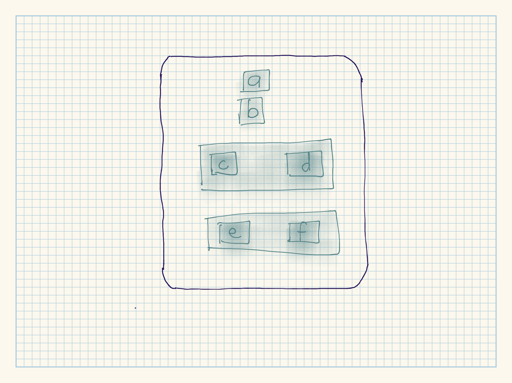
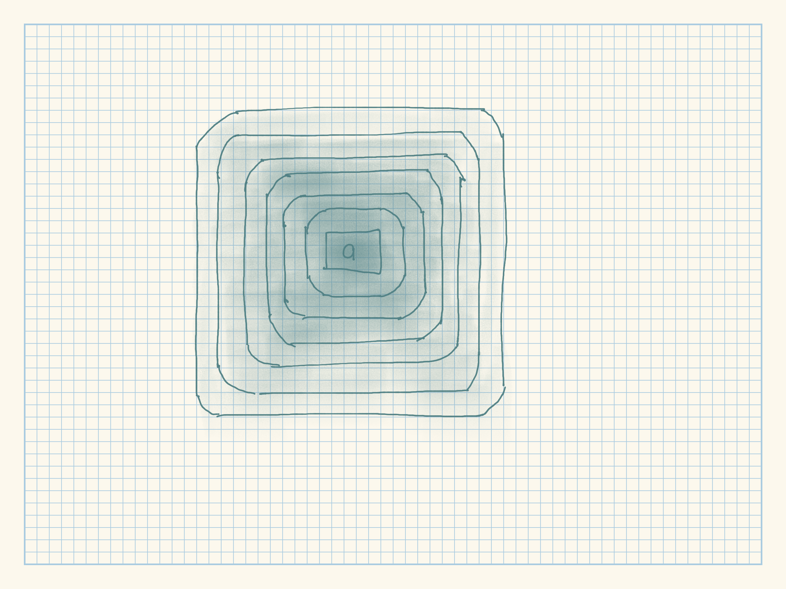

Last updated: 2020-11-10
Checks: 7 0
Knit directory: r4ds_book/
This reproducible R Markdown analysis was created with workflowr (version 1.6.2). The Checks tab describes the reproducibility checks that were applied when the results were created. The Past versions tab lists the development history.
Great! Since the R Markdown file has been committed to the Git repository, you know the exact version of the code that produced these results.
Great job! The global environment was empty. Objects defined in the global environment can affect the analysis in your R Markdown file in unknown ways. For reproduciblity it’s best to always run the code in an empty environment.
The command set.seed(20200814) was run prior to running the code in the R Markdown file. Setting a seed ensures that any results that rely on randomness, e.g. subsampling or permutations, are reproducible.
Great job! Recording the operating system, R version, and package versions is critical for reproducibility.
Nice! There were no cached chunks for this analysis, so you can be confident that you successfully produced the results during this run.
Great job! Using relative paths to the files within your workflowr project makes it easier to run your code on other machines.
Great! You are using Git for version control. Tracking code development and connecting the code version to the results is critical for reproducibility.
The results in this page were generated with repository version cf689c8. See the Past versions tab to see a history of the changes made to the R Markdown and HTML files.
Note that you need to be careful to ensure that all relevant files for the analysis have been committed to Git prior to generating the results (you can use wflow_publish or wflow_git_commit). workflowr only checks the R Markdown file, but you know if there are other scripts or data files that it depends on. Below is the status of the Git repository when the results were generated:
Ignored files:
Ignored: .Rproj.user/
Untracked files:
Untracked: analysis/images/
Untracked: code_snipp.txt
Note that any generated files, e.g. HTML, png, CSS, etc., are not included in this status report because it is ok for generated content to have uncommitted changes.
These are the previous versions of the repository in which changes were made to the R Markdown (analysis/ch16_vectors.Rmd) and HTML (docs/ch16_vectors.html) files. If you’ve configured a remote Git repository (see ?wflow_git_remote), click on the hyperlinks in the table below to view the files as they were in that past version.
| File | Version | Author | Date | Message |
|---|---|---|---|---|
| html | 4879249 | sciencificity | 2020-11-09 | Build site. |
| Rmd | f3d860f | sciencificity | 2020-11-09 | finished ch16 |
Click on the tab buttons below for each section
There are two types of vectors:
NULL is often used to represent the absence of a vector (a vector of length 0) (as opposed to NA which is used to represent the absence of a value in a vector).
Every vector has two key properties:
Its type, which you can determine with typeof() / class.
typeof(letters)
#> [1] "character"
class(letters)
#> [1] "character"
typeof(1:10)
#> [1] "integer"
class(1:10)
#> [1] "integer"Its length, which you can determine with length().
(x <- list("a", "b", 1:10))
#> [[1]]
#> [1] "a"
#>
#> [[2]]
#> [1] "b"
#>
#> [[3]]
#> [1] 1 2 3 4 5 6 7 8 9 10
length(x)
#> [1] 3
typeof(x)
#> [1] "list"
class(x)
#> [1] "list"1:10 %% 3 == 0
#> [1] FALSE FALSE TRUE FALSE FALSE TRUE FALSE FALSE TRUE FALSE
c(TRUE, FALSE, TRUE, NA)
#> [1] TRUE FALSE TRUE NA
typeof(1:10 %% 3 == 0)
#> [1] "logical"
length(1:10 %% 3 == 0)
#> [1] 10typeof(1)
#> [1] "double"
# sees this as integer - maybe because of the list of values, it can infer
# type better?
typeof(1:10)
#> [1] "integer"
typeof(1L) # the L specifically changes it to an integer
#> [1] "integer"
typeof(1.5L)
#> [1] "double"
typeof(1L:10L)
#> [1] "integer"
1L:10L
#> [1] 1 2 3 4 5 6 7 8 9 10Doubles are approximations!
(x <- sqrt(2) ^ 2)
#> [1] 2
x - 2
#> [1] 0.0000000000000004440892Integers have one special value: NA, while doubles have four: NA, NaN, Inf and -Inf.
c(-1, 0, 1) / 0
#> [1] -Inf NaN InfAvoid using == to check for these other special values. Instead use the helper functions is.finite(), is.infinite(), and is.nan():
| 0 | Inf | NA | NaN | |
|---|---|---|---|---|
is.finite() |
x | |||
is.infinite() |
x | |||
is.na() |
x | x | ||
is.nan() |
x |
R uses a global string pool. This means that each unique string is only stored in memory once.
x <- "This is a reasonably long string"
pryr::object_size(x)
#> 152 B
y <- rep(x, 1000)
pryr::object_size(y)
#> 8.14 kB
# 8 byte pointers x 1000 to a 152B string
# I am not exactly getting to the same amt but it's close
# the bytes that make a kB is either 1000 or 1024
# I get close if I use the calc below BUT that is completely
# NOT consistent so I am probably incorrect here!!
(8*1000)/1000 + 152/1024
#> [1] 8.148438Each type of atomic vector has its own missing value.
NA # logical
#> [1] NA
NA_integer_ # integer
#> [1] NA
NA_real_ # double
#> [1] NA
NA_character_ # character
#> [1] NADescribe the difference between is.finite(x) and !is.infinite(x).
is.finite(x) tests if each element in the vector is finite.
is.infinite(x) tests if each element in the vector is Inf / -Inf. The ! in front of is.infinite(x) asks each element of the vector - “Are you NOT Inf / -Inf?”.
Help Page:
is.finite returns a vector of the same length as x the jth element of which is TRUE if x[j] is finite (i.e., it is not one of the values NA, NaN, Inf or -Inf) and FALSE otherwise. Complex numbers are finite if both the real and imaginary parts are.
is.infinite returns a vector of the same length as x the jth element of which is TRUE if x[j] is infinite (i.e., equal to one of Inf or -Inf) and FALSE otherwise.
is.finite(c(-1, 0, 1) / 0)
#> [1] FALSE FALSE FALSE
!is.infinite(c(-1, 0, 1) / 0)
#> [1] FALSE TRUE FALSERead the source code for dplyr::near() (Hint: to see the source code, drop the ()). How does it work?
dplyr::near
#> function (x, y, tol = .Machine$double.eps^0.5)
#> {
#> abs(x - y) < tol
#> }
#> <bytecode: 0x000000002c890f80>
#> <environment: namespace:dplyr>It checks if two numbers are close to each other within some tolerance tol.
dplyr::near(1, 1.1)
#> [1] FALSE
dplyr::near(1, 1.1, tol = 0.11)
#> [1] TRUE
dplyr::near(sqrt(2)^2, 2)
#> [1] TRUE
dplyr::near(4, 4 + 4.567342e-10)
#> [1] TRUEA logical vector can take 3 possible values. How many possible values can an integer vector take? How many possible values can a double take? Use google to do some research.
From the help page ?integer: The range of representable integers is restricted to about +/-2*10^9.
For doubles it is a bit more complicated to explain. Here is more information.
Brainstorm at least four functions that allow you to convert a double to an integer. How do they differ? Be precise.
Depending on the function used some of these drop the decimal part and just keep the integer part, other functions convert the double to the nearest integer.
as.integer(2.678)
#> [1] 2
2.678 %/% 1
#> [1] 2
round(2.678, 0)
#> [1] 3
floor(2.678)
#> [1] 2
ceiling(2.678)
#> [1] 3
trunc(2.678)
#> [1] 2What functions from the readr package allow you to turn a string into logical, integer, and double vector?
The different parse_ variants.
readr::parse_integer(c("1", "2"))
#> [1] 1 2
readr::parse_double(c("2.45", "6.79"))
#> [1] 2.45 6.79
readr::parse_logical(c("TRUE", "FALSE", "NA", "1", "0", "3"))
#> Warning: 1 parsing failure.
#> row col expected actual
#> 6 -- 1/0/T/F/TRUE/FALSE 3
#> [1] TRUE FALSE NA TRUE FALSE NA
#> attr(,"problems")
#> # A tibble: 1 x 4
#> row col expected actual
#> <int> <int> <chr> <chr>
#> 1 6 NA 1/0/T/F/TRUE/FALSE 3You can coerce in two ways.
Explicitly using as.logical(), as.integer(), as.double(), or as.character(). But before explicitly coercing see if you can make the fix upstream, e.g. in your readr col_types specification.
Implicitly when you use a vector in a specific context, e.g. when you use a logical vector with in sum for example the TRUE and FALSE are converted to 1 / 0 and added up.
x <- sample(20, # sample from 1:20
100, # get me a 100 of those
replace = TRUE # repeats are welcome
)
y <- x > 10
sum(y) # how many greater than 10?
#> [1] 50
mean(y) # what proportion are greater than 10?
#> [1] 0.5When you try and create a vector containing multiple types with c(), the most complex type always wins.
typeof(c(TRUE, 1L)) # most complex type = integer
#> [1] "integer"
typeof(c(1L, 1.5)) # most complex type = double
#> [1] "double"
typeof(c(1.5, "a")) # I can't convert "a" to a double, so 1.5 converted to char
#> [1] "character"An atomic vector can not have a mix of different types because the type is a property of the complete vector, NOT the individual elements.
Sometimes you want to do different things based on the type of vector and you may use Base R’s, typeof(),is.vector() etc. BUT these often return surprising results.
{purr}’s is_* functions provide a good alternative.
| lgl | int | dbl | chr | list | |
|---|---|---|---|---|---|
is_logical() |
x | ||||
is_integer() |
x | ||||
is_double() |
x | ||||
is_numeric() |
x | x | |||
is_character() |
x | ||||
is_atomic() |
x | x | x | x | |
is_list() |
x | ||||
is_vector() |
x | x | x | x | x |
R will also implicitly coerce the length of vectors by recycling, i.e. the shorter vector is repeated to the same length as the longer vector.
Generally this is useful when you are mixing vectors and “scalars” (a single number is a vector of length 1).
sample(10) + 100
#> [1] 110 105 106 103 102 104 107 108 109 101
runif(10) > 0.5
#> [1] FALSE FALSE TRUE TRUE FALSE FALSE FALSE FALSE TRUE TRUE# this is essentially as follows
# 1 2 3 4 5 6 7 8 9 10 +
# 1 2 1 2 1 2 1 2 1 2
# -------------------------------
# 2 4 4 6 6 8 8 10 10 12
# the shorter vector (1,2) is recycled as many times as needed
1:10 + 1:2
#> [1] 2 4 4 6 6 8 8 10 10 12The recycling is silent except when the length of the longer is not an integer multiple of the length of the shorter vector.
1:10 + 1:3
#> Warning in 1:10 + 1:3: longer object length is not a multiple of shorter object
#> length
#> [1] 2 4 6 5 7 9 8 10 12 11In tidyverse you will get errors when you recycle anything other than a “scalar” (length 1 vector). To recycle, you need to do it yourself with rep().
tibble(x = 1:4, y = 1:2)
#> Error: Tibble columns must have compatible sizes.
#> * Size 4: Existing data.
#> * Size 2: Column `y`.
#> i Only values of size one are recycled.
tibble(x = 1:4, y = rep(1:2, 2))
#> # A tibble: 4 x 2
#> x y
#> <int> <int>
#> 1 1 1
#> 2 2 2
#> 3 3 1
#> 4 4 2
tibble(x = 1:4, y = rep(1:2, each = 2))
#> # A tibble: 4 x 2
#> x y
#> <int> <int>
#> 1 1 1
#> 2 2 1
#> 3 3 2
#> 4 4 2You may name your vector items during creation with c().
c(x = 1, y = 2, z = 4)
#> x y z
#> 1 2 4Or use purrr::set_names():
set_names(1:3, c("a", "b", "c"))
#> a b c
#> 1 2 3To subset a vector use [. [ is the subsetting function.
Subsetting with positive integers keeps the elements at those positions:
x <- c("one", "two", "three", "four", "five")
x[c(3, 2, 5)]
#> [1] "three" "two" "five"Can also get longer output by repeating.
x[c(1, 1, 5, 5, 5, 2)]
#> [1] "one" "one" "five" "five" "five" "two"Negative values drop the elements at the specified positions.
x[c(-1, -3, -5)]
#> [1] "two" "four"It’s an error to mix positive and negative values.
x[c(1, -1)]
#> Error in x[c(1, -1)]: only 0's may be mixed with negative subscriptsThe error message mentions subsetting with zero, which returns no values.
x[0]
#> character(0)Subsetting with a logical vector keeps all values corresponding to a TRUE value. We use this often.
x <- c(10, 3, NA, 5, 8, 1, NA)
# All non-missing values of x
x[!is.na(x)]
#> [1] 10 3 5 8 1
# All even (or missing!) values of x
x[x %% 2 == 0]
#> [1] 10 NA 8 NAIf you have a named vector, you can subset it with a character vector:
x <- c(abc = 1, def = 2, xyz = 5)
x[c("xyz", "def")]
#> xyz def
#> 5 2
x[c("xyz", "xyz", "abc", "abc")]
#> xyz xyz abc abc
#> 5 5 1 1The simplest type of subsetting is nothing, x[], which returns the complete x. Not useful for subsetting vectors, but useful when subsetting matrices E.g if x is 2d, x[1, ] selects the first row and all the columns, and x[, -1] selects all rows and all columns except the first.
There is an important variation of [ called [[. [[ only ever extracts a single element, and always drops names.
What does mean(is.na(x)) tell you about a vector x? What about sum(!is.finite(x))?
mean(is.na(x)) tells you the proportion that is NAsum(!is.finite(x)) tells you how many non-finite entries are in your datamean(is.na(c(NA, 2, TRUE, 4, NA, NaN, Inf, -Inf))) # 3/8
#> [1] 0.375
sum(!is.finite(c(NA, Inf, 56, -Inf, 98.6, NaN)))
#> [1] 4Carefully read the documentation of is.vector(). What does it actually test for? Why does is.atomic() not agree with the definition of atomic vectors above?
is.atomic(x) returns TRUE if the vector is any of the types (“logical”, “integer”, “numeric”, “complex”, “character” and “raw”) and NULL.is.vector(x) returns TRUE if x is a vector with no attributes other than names.# borrowed from help page of ?is.atomic
is_a_type <- function(x) c(vect = is.vector(x), atomic = is.atomic(x))
is_a_type(c(a = 1, b = 3))
#> vect atomic
#> TRUE TRUE
is_a_type(list(2)) # why? class not one of those listed - i.e. it is a list
#> vect atomic
#> TRUE FALSE
is_a_type(list(2, 4, "test"))
#> vect atomic
#> TRUE FALSE
typeof(list(2))
#> [1] "list"
x <- list(2, 4, "test")
attributes(x)
#> NULLCompare and contrast setNames() with purrr::set_names().
| setNames() | purrr::set_names |
|---|---|
| two args, vector + vector of names | three args, vector + vector of names + … |
| vector of names must be in c() | vector of names can be in c() or individually specified |
| NA | Can be a function e.g. toupper |
If nm is NULL names removed |
If nm is NULL names removed |
If nm only specified, names match elements |
Error! Not allowed! x is mandatory |
| If 1st arg only specified, error | vector + names created out of 1st arg |
purrr::set_names(1:4, c("a", "b", "c", "d"))
#> a b c d
#> 1 2 3 4
purrr::set_names(1:4, letters[1:4])
#> a b c d
#> 1 2 3 4
purrr::set_names(1:4, "a", "b", "c", "d")
#> a b c d
#> 1 2 3 4
# If the second argument is omitted a vector is named with itself
purrr::set_names(letters[1:5])
#> a b c d e
#> "a" "b" "c" "d" "e"
# Alternatively you can supply a function
purrr::set_names(1:10, ~ letters[seq_along(.)])
#> a b c d e f g h i j
#> 1 2 3 4 5 6 7 8 9 10
purrr::set_names(head(mtcars), toupper)
#> MPG CYL DISP HP DRAT WT QSEC VS AM GEAR CARB
#> Mazda RX4 21.0 6 160 110 3.90 2.620 16.46 0 1 4 4
#> Mazda RX4 Wag 21.0 6 160 110 3.90 2.875 17.02 0 1 4 4
#> Datsun 710 22.8 4 108 93 3.85 2.320 18.61 1 1 4 1
#> Hornet 4 Drive 21.4 6 258 110 3.08 3.215 19.44 1 0 3 1
#> Hornet Sportabout 18.7 8 360 175 3.15 3.440 17.02 0 0 3 2
#> Valiant 18.1 6 225 105 2.76 3.460 20.22 1 0 3 1
# If the input vector is unnamed, it is first named after itself
# before the function is applied:
purrr::set_names(letters, toupper)
#> A B C D E F G H I J K L M N O P Q R S T
#> "a" "b" "c" "d" "e" "f" "g" "h" "i" "j" "k" "l" "m" "n" "o" "p" "q" "r" "s" "t"
#> U V W X Y Z
#> "u" "v" "w" "x" "y" "z"
(mtcars_sub <- head(mtcars))
#> mpg cyl disp hp drat wt qsec vs am gear carb
#> Mazda RX4 21.0 6 160 110 3.90 2.620 16.46 0 1 4 4
#> Mazda RX4 Wag 21.0 6 160 110 3.90 2.875 17.02 0 1 4 4
#> Datsun 710 22.8 4 108 93 3.85 2.320 18.61 1 1 4 1
#> Hornet 4 Drive 21.4 6 258 110 3.08 3.215 19.44 1 0 3 1
#> Hornet Sportabout 18.7 8 360 175 3.15 3.440 17.02 0 0 3 2
#> Valiant 18.1 6 225 105 2.76 3.460 20.22 1 0 3 1
purrr::set_names(mtcars_sub, nm = NULL)
#>
#> Mazda RX4 21.0 6 160 110 3.90 2.620 16.46 0 1 4 4
#> Mazda RX4 Wag 21.0 6 160 110 3.90 2.875 17.02 0 1 4 4
#> Datsun 710 22.8 4 108 93 3.85 2.320 18.61 1 1 4 1
#> Hornet 4 Drive 21.4 6 258 110 3.08 3.215 19.44 1 0 3 1
#> Hornet Sportabout 18.7 8 360 175 3.15 3.440 17.02 0 0 3 2
#> Valiant 18.1 6 225 105 2.76 3.460 20.22 1 0 3 1
(tmp <- 1:3)
#> [1] 1 2 3
(tmp <- setNames(tmp, c("foo", "bar", "baz")))
#> foo bar baz
#> 1 2 3
(tmp <- setNames(tmp, NULL))
#> [1] 1 2 3
(tmp <- setNames(nm=tmp))
#> 1 2 3
#> 1 2 3
tmp <- setNames(tmp)
#> Error in setNames(tmp): argument "nm" is missing, with no defaultCreate functions that take a vector as input and returns:
[ or [[?last_val <- function(x){
if(length(x) > 0) {
x[[length(x)]]
} else {
x
}
}
x <- 1:10
last_val(x)
#> [1] 10
x <- c()
last_val(x)
#> NULLeven_vals <- function(x){
x[c(seq_along(x) %% 2 == 0)]
}
x <- c("a", "b", "c", "d", "e")
even_vals(x)
#> [1] "b" "d"
x <- 1:10
even_vals(x)
#> [1] 2 4 6 8 10all_but_last_val <- function(x){
if(length(x) > 0) {
x[-length(x)]
} else {
"empty vector"
}
}
x <- 1:10
all_but_last_val(x)
#> [1] 1 2 3 4 5 6 7 8 9
x <- c()
all_but_last_val(x)
#> [1] "empty vector"
all_but_last_val(c(10))
#> numeric(0) even_nums <- function(x){
if ((typeof(x) == "integer" ||
typeof(x) == "numeric" ||
typeof(x) == "double")
&& (length(x) > 0)) {
x[(x %% 2 == 0) & (!is.na(x))]
} else {
"Not an integer vector!"
}
}
x <- 1:10
x[(x %% 2 == 0) & (!is.na(x))]
#> [1] 2 4 6 8 10
even_nums(x)
#> [1] 2 4 6 8 10
x <- c(NA, 1:5, NaN)
even_nums(x)
#> [1] 2 4
x <- letters[1:10]
even_nums(x)
#> [1] "Not an integer vector!"Why is x[-which(x > 0)] not the same as x[x <= 0]?
which(x): “more generally, including when x has NA’s, which(x) is seq_along(x)[!is.na(x) & x]”. This keeps track of the indicies where the condition we’re testing is TRUE. FALSE and NA are ignored.[: “NAs in indexing: When extracting, a numerical, logical or character NA index picks an unknown element and so returns NA in the corresponding element of a logical, integer, numeric, complex or character result, and NULL for a list.”[] it returns as NA.x <- c(-9, NA, -Inf, 0:2, NaN, -12, 10, Inf)
x[-which(x > 0)]
#> [1] -9 NA -Inf 0 NaN -12
which(x > 0)
#> [1] 5 6 9 10
x[x <= 0]
#> [1] -9 NA -Inf 0 NA -12
x<=0
#> [1] TRUE NA TRUE TRUE FALSE FALSE NA TRUE FALSE FALSE
x[!(x <= 0)]
#> [1] NA 1 2 NA 10 InfWhat happens when you subset with a positive integer that’s bigger than the length of the vector? What happens when you subset with a name that doesn’t exist?
You get NA.
x <- 1:10
v <- c(a = 1, b = 2, c = 3)
x[11]
#> [1] NA
v["d"]
#> <NA>
#> NALists are more complex than vectors as lists can contain other lists. You create a list with list().
x <- list(1, 2, 3)
x
#> [[1]]
#> [1] 1
#>
#> [[2]]
#> [1] 2
#>
#> [[3]]
#> [1] 3
x[1]
#> [[1]]
#> [1] 1Super useful tool for working with lists is str() because it focusses on the structure, not the contents.
str(x)
#> List of 3
#> $ : num 1
#> $ : num 2
#> $ : num 3
x_named <- list(a = 1, b = 2, c = 3)
str(x_named)
#> List of 3
#> $ a: num 1
#> $ b: num 2
#> $ c: num 3list() may have items of mixed types and other lists (not allowed in vectors).
y <- list("a", 1L, 1.5, TRUE)
str(y)
#> List of 4
#> $ : chr "a"
#> $ : int 1
#> $ : num 1.5
#> $ : logi TRUEz <- list(list(1, 2), list(3, 4))
str(z)
#> List of 2
#> $ :List of 2
#> ..$ : num 1
#> ..$ : num 2
#> $ :List of 2
#> ..$ : num 3
#> ..$ : num 4x1 <- list(c(1, 2), c(3, 4))
str(x1)
#> List of 2
#> $ : num [1:2] 1 2
#> $ : num [1:2] 3 4
x2 <- list(list(1, 2), list(3, 4))
str(x2)
#> List of 2
#> $ :List of 2
#> ..$ : num 1
#> ..$ : num 2
#> $ :List of 2
#> ..$ : num 3
#> ..$ : num 4
x3 <- list(1, list(2, list(3)))
str(x3)
#> List of 2
#> $ : num 1
#> $ :List of 2
#> ..$ : num 2
#> ..$ :List of 1
#> .. ..$ : num 3There are three ways to subset a list:
a <- list(a = 1:3, b = "a string", c = pi, d = list(-1, -5))
str(a)
#> List of 4
#> $ a: int [1:3] 1 2 3
#> $ b: chr "a string"
#> $ c: num 3.14
#> $ d:List of 2
#> ..$ : num -1
#> ..$ : num -5[ extracts a sub-list. The result will always be a list.
str(a[1:2])
#> List of 2
#> $ a: int [1:3] 1 2 3
#> $ b: chr "a string"
str(a[4])
#> List of 1
#> $ d:List of 2
#> ..$ : num -1
#> ..$ : num -5
a["a"]
#> $a
#> [1] 1 2 3[[ extracts a single component from a list. It removes a level of hierarchy from the list.
str(a[[1]])
#> int [1:3] 1 2 3
str(a[[4]])
#> List of 2
#> $ : num -1
#> $ : num -5$ is a shorthand for extracting named elements of a list. It works similarly to [[ except that you don’t need to use quotes.
a$a
#> [1] 1 2 3
a[["a"]]
#> [1] 1 2 3[[ drills down into the list while [ returns a new, smaller list.
Draw the following lists as nested sets:
list(a, b, list(c, d), list(e, f))
list(list(list(list(list(list(a))))))
super_nested <- list(list(list(list(list(list(a = "a"))))))
str(super_nested)
#> List of 1
#> $ :List of 1
#> ..$ :List of 1
#> .. ..$ :List of 1
#> .. .. ..$ :List of 1
#> .. .. .. ..$ :List of 1
#> .. .. .. .. ..$ a: chr "a"What happens if you subset a tibble as if you’re subsetting a list? What are the key differences between a list and a tibble?
The subsetting is much the same - some cases the orientation of the returned structure is changed - e.g. column return for tibble [ but row return for list [.
The difference between a tibble and a list is that all the elements of a tibble must be vectors with the same length (deals with rectangular data). A list works with rectangular and non-rectangular data.
x <- list(a = 1:10, b = letters[1:10])
str(x)
#> List of 2
#> $ a: int [1:10] 1 2 3 4 5 6 7 8 9 10
#> $ b: chr [1:10] "a" "b" "c" "d" ...
(x_tib <- tibble(a = 1:10, b = letters[1:10]))
#> # A tibble: 10 x 2
#> a b
#> <int> <chr>
#> 1 1 a
#> 2 2 b
#> 3 3 c
#> 4 4 d
#> 5 5 e
#> 6 6 f
#> 7 7 g
#> 8 8 h
#> 9 9 i
#> 10 10 j
x[["a"]]
#> [1] 1 2 3 4 5 6 7 8 9 10
x_tib[["a"]]
#> [1] 1 2 3 4 5 6 7 8 9 10
x[2]
#> $b
#> [1] "a" "b" "c" "d" "e" "f" "g" "h" "i" "j"
x_tib[2]
#> # A tibble: 10 x 1
#> b
#> <chr>
#> 1 a
#> 2 b
#> 3 c
#> 4 d
#> 5 e
#> 6 f
#> 7 g
#> 8 h
#> 9 i
#> 10 j
typeof(x[["a"]])
#> [1] "integer"
typeof(x_tib[["a"]])
#> [1] "integer"
typeof(x[2])
#> [1] "list"
typeof(x_tib[2])
#> [1] "list"
x$a
#> [1] 1 2 3 4 5 6 7 8 9 10
x_tib$a
#> [1] 1 2 3 4 5 6 7 8 9 10Any vector can contain arbitrary additional metadata through its attributes. Attributes are a kind of named list of vectors that can be attached to an object. You can get and set individual attribute values with attr() or see them all at once with attributes().
x <- 1:10
attr(x, "greeting")
#> NULL
attr(x, "greeting") <- "Hi!"
attr(x, "farewell") <- "Bye!"
attributes(x)
#> $greeting
#> [1] "Hi!"
#>
#> $farewell
#> [1] "Bye!"as.Date
#> function (x, ...)
#> UseMethod("as.Date")
#> <bytecode: 0x000000001691aa68>
#> <environment: namespace:base>You can list all the methods for a generic with methods():
methods("as.Date")
#> [1] as.Date.character as.Date.default as.Date.factor
#> [4] as.Date.numeric as.Date.POSIXct as.Date.POSIXlt
#> [7] as.Date.vctrs_sclr* as.Date.vctrs_vctr*
#> see '?methods' for accessing help and source codeYou can see the specific implementation of a method with getS3method():
getS3method("as.Date", "default")
#> function (x, ...)
#> {
#> if (inherits(x, "Date"))
#> x
#> else if (is.logical(x) && all(is.na(x)))
#> .Date(as.numeric(x))
#> else stop(gettextf("do not know how to convert '%s' to class %s",
#> deparse(substitute(x)), dQuote("Date")), domain = NA)
#> }
#> <bytecode: 0x0000000028b415b8>
#> <environment: namespace:base>
getS3method("as.Date", "numeric")
#> function (x, origin, ...)
#> {
#> if (missing(origin))
#> stop("'origin' must be supplied")
#> as.Date(origin, ...) + x
#> }
#> <bytecode: 0x000000002c09b648>
#> <environment: namespace:base>One important S3 generic is print() as well as the subsetting functions [, [[, and $.
There are some augmented vectors, which are vectors with additional attributes:
Factors are designed to represent categorical data that can take a fixed set of possible values. Factors are built on top of integers, and have a levels attribute:
x <- factor(c("ab", "cd", "ab"), levels = c("ab", "cd", "ef"))
typeof(x)
#> [1] "integer"
attributes(x)
#> $levels
#> [1] "ab" "cd" "ef"
#>
#> $class
#> [1] "factor"Dates in R are numeric vectors that represent the number of days since 1 January 1970.
x <- as.Date("1971-01-01")
unclass(x)
#> [1] 365
typeof(x)
#> [1] "double"
attributes(x)
#> $class
#> [1] "Date"Date-times are numeric vectors with class POSIXct that represent the number of seconds since 1 January 1970.
x <- lubridate::ymd_hm("1970-01-01 01:00")
unclass(x)
#> [1] 3600
#> attr(,"tzone")
#> [1] "UTC"
typeof(x)
#> [1] "double"
attributes(x)
#> $class
#> [1] "POSIXct" "POSIXt"
#>
#> $tzone
#> [1] "UTC"The tzone attribute is optional. It controls how the time is printed.
attr(x, "tzone") <- "US/Pacific"
x
#> [1] "1969-12-31 17:00:00 PST"
attr(x, "tzone") <- "US/Eastern"
x
#> [1] "1969-12-31 20:00:00 EST"
attr(x, "tzone") <- "Africa/Johannesburg"
x
#> [1] "1970-01-01 03:00:00 SAST"You can always convert datetimes to a regular date time lubridate::as_date_time().
Tibbles are augmented lists: they have class “tbl_df” + “tbl” + “data.frame”, and names (column) and row.names attributes:
tb <- tibble::tibble(x = 1:5, y = 5:1)
typeof(tb)
#> [1] "list"
attributes(tb)
#> $names
#> [1] "x" "y"
#>
#> $row.names
#> [1] 1 2 3 4 5
#>
#> $class
#> [1] "tbl_df" "tbl" "data.frame"df <- data.frame(x = 1:5, y = 5:1)
typeof(df)
#> [1] "list"
attributes(df)
#> $names
#> [1] "x" "y"
#>
#> $class
#> [1] "data.frame"
#>
#> $row.names
#> [1] 1 2 3 4 5The main difference is the class.
What does hms::hms(3600) return? How does it print? What primitive type is the augmented vector built on top of? What attributes does it use?
Time is stored in it. This is converting 3600 seconds to a time in the format hh:mm:ss hence 01:00:00 returned. Built on top of difftime. It does not need any attibutes as all have defaults.
hms::hms(3600) # 1 hr - equivalent to hms(seconds = 3600)
#> 01:00:00
hms::hms(0)
#> 00:00:00
hms::hms(60) # 1 min
#> 00:01:00
attributes(hms::hms(1))
#> $units
#> [1] "secs"
#>
#> $class
#> [1] "hms" "difftime"Try and make a tibble that has columns with different lengths. What happens?
You get an error unless it is a scalar (vector of length = 1) and a column with length > 1. I.e. you can’t combine a column of length = 2, and another of length = 4 as with base R.
x <- c(2)
y <- letters[1:5]
tibble(x = x, y = y)
#> # A tibble: 5 x 2
#> x y
#> <dbl> <chr>
#> 1 2 a
#> 2 2 b
#> 3 2 c
#> 4 2 d
#> 5 2 e
x <- c(1:5)
y <- letters[1:10]
tibble(x = x, y = y)
#> Error: Tibble columns must have compatible sizes.
#> * Size 5: Existing data.
#> * Size 10: Column `y`.
#> i Only values of size one are recycled.Based on the definition above, is it ok to have a list as a column of a tibble?
Yes it is ok, but you will need a list for every observation.
x <- list(list(1,2), list(3,4))
y <- letters[1:2]
tibble(x = x, y = y)
#> # A tibble: 2 x 2
#> x y
#> <list> <chr>
#> 1 <list [2]> a
#> 2 <list [2]> b
sessionInfo()
#> R version 3.6.3 (2020-02-29)
#> Platform: x86_64-w64-mingw32/x64 (64-bit)
#> Running under: Windows 10 x64 (build 18363)
#>
#> Matrix products: default
#>
#> locale:
#> [1] LC_COLLATE=English_South Africa.1252 LC_CTYPE=English_South Africa.1252
#> [3] LC_MONETARY=English_South Africa.1252 LC_NUMERIC=C
#> [5] LC_TIME=English_South Africa.1252
#>
#> attached base packages:
#> [1] stats graphics grDevices utils datasets methods base
#>
#> other attached packages:
#> [1] lubridate_1.7.9 magrittr_1.5 flair_0.0.2 forcats_0.5.0
#> [5] stringr_1.4.0 dplyr_1.0.2 purrr_0.3.4 readr_1.4.0
#> [9] tidyr_1.1.2 tibble_3.0.3 ggplot2_3.3.2 tidyverse_1.3.0
#> [13] workflowr_1.6.2
#>
#> loaded via a namespace (and not attached):
#> [1] tidyselect_1.1.0 xfun_0.13 haven_2.3.1 colorspace_1.4-1
#> [5] vctrs_0.3.2 generics_0.0.2 htmltools_0.5.0 yaml_2.2.1
#> [9] utf8_1.1.4 rlang_0.4.8 later_1.0.0 pillar_1.4.6
#> [13] withr_2.2.0 glue_1.4.2 DBI_1.1.0 pryr_0.1.4
#> [17] dbplyr_2.0.0 modelr_0.1.8 readxl_1.3.1 lifecycle_0.2.0
#> [21] munsell_0.5.0 gtable_0.3.0 cellranger_1.1.0 rvest_0.3.6
#> [25] codetools_0.2-16 evaluate_0.14 knitr_1.28 ps_1.3.2
#> [29] httpuv_1.5.2 fansi_0.4.1 broom_0.7.2 Rcpp_1.0.4.6
#> [33] promises_1.1.0 backports_1.1.6 scales_1.1.0 jsonlite_1.7.1
#> [37] fs_1.5.0 hms_0.5.3 digest_0.6.27 stringi_1.5.3
#> [41] rprojroot_1.3-2 grid_3.6.3 cli_2.1.0 tools_3.6.3
#> [45] crayon_1.3.4 whisker_0.4 pkgconfig_2.0.3 ellipsis_0.3.1
#> [49] xml2_1.3.2 reprex_0.3.0 assertthat_0.2.1 rmarkdown_2.4
#> [53] httr_1.4.2 rstudioapi_0.11 R6_2.4.1 git2r_0.26.1
#> [57] compiler_3.6.3